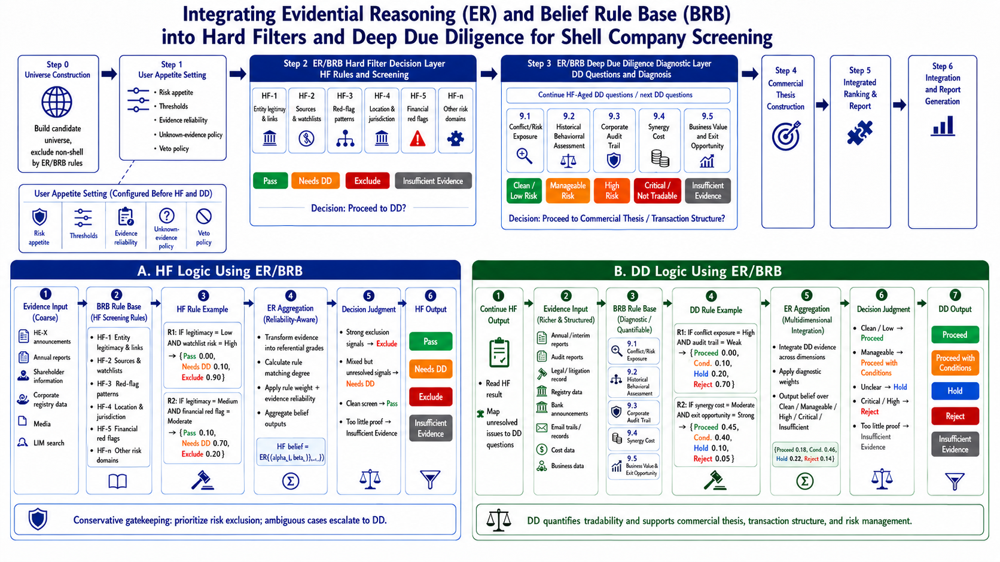

Step 0 · Universe Construction
Candidate universe
这里仅保留候选池规模，以及候选池使用了哪些数据来源、哪些清洗 / 召回线索。
Universe size
3,126
清洗后的 candidate universe 总量。
HKEX announcements
Annual / interim reports
Court / petition records
Shareholding disclosures
Financing terms
Structured market data
低市值 / 低 P/B
控制权线索
融资复杂度
合规 / 停牌 / 除牌风险
平台适配信号
Step 1 · Case Input & User settings
Case input & User settings
Case input
User settings
Source reliability
HF rules
DD rules
Step 2 · Hard Filters
Hard Filters
HF 用来判断公司能不能进入 DD。这里不仅给整体 HF 决策，也直接展示每条 HF 条件的 belief distribution、证据强弱和 ER 聚合结果。
Overall HF decision summary
| Company | Overall HF decision | Strongest warning | Strongest exclude | Main unknown |
|---|
HF-originated DD questions
Step 3 · Deep Due Diligence
Deep Due Diligence
DD 用来判断风险到底在哪里、能不能修、如果能修需要什么交易条件。这里会把每个 DD 模块的 belief distribution、证据可靠性和 ER 聚合路径直接展开。